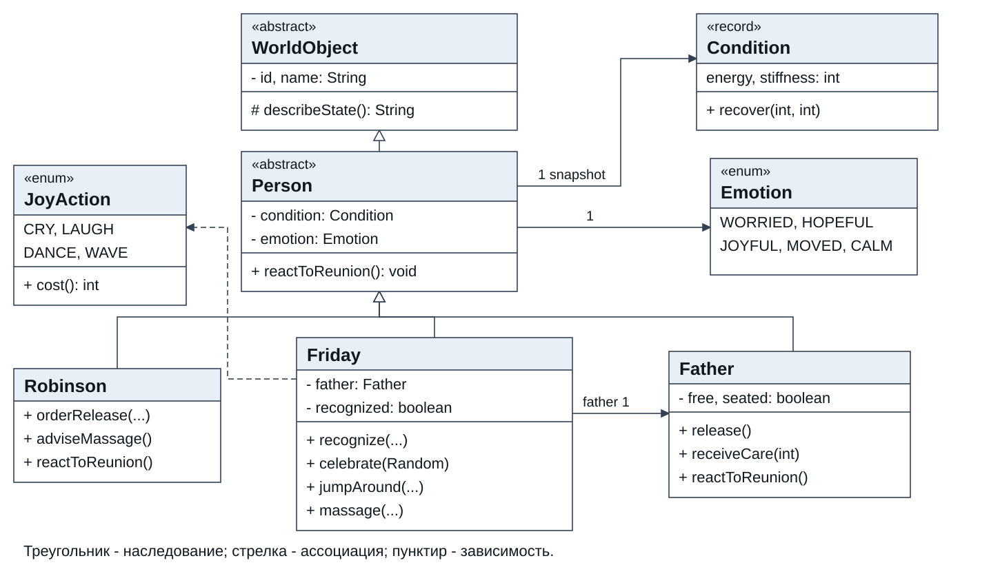
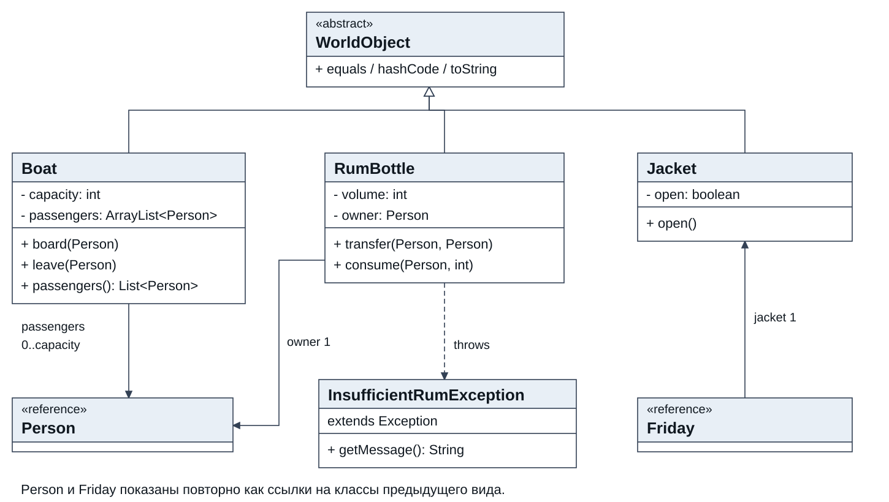
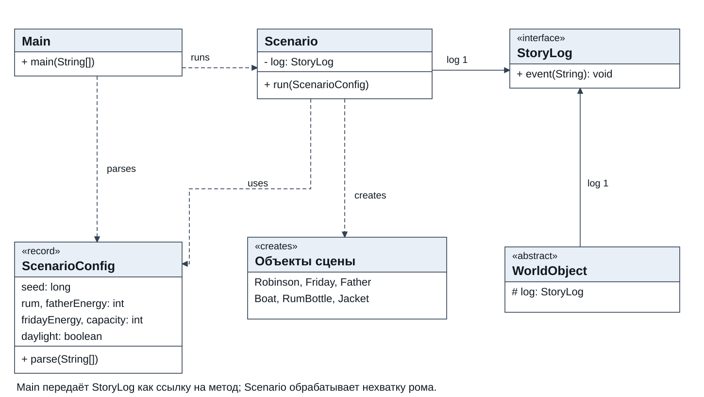

Вариант 13324 • Программирование • Первый семестр
Объектная модель встречи Пятницы с отцом
Цель работы - выделить персонажей и предметы литературного отрывка, описать их состояние и поведение средствами Java и реализовать вариативный сценарий взаимодействия.
Подготовлена программа для Java 17 без внешних библиотек. Исходники, исполняемый JAR, диаграммы и журналы проверок входят в комплект. Сборка и 59 проверок модели успешно выполнены локально и на helios; удалённые исходники сверены с локальными по SHA-256.
| Материал | Где находится |
|---|---|
| Исходники и тесты | src/lab3 и test/lab3 |
| Готовая программа | lab3.jar |
| Полная UML схема | docs/classes.mmd; три изображения SVG и PNG |
| Результаты helios | results/helios |
| Промпты для сравнения | docs/ai-prompts.txt |
| Копии проектов ИИ и результаты | comparison/variants; results/comparison |
| Редактируемая версия отчёта | docs/report.html |
Запуск на сервере выполнен. Согласование с преподавателем и очная защита остаются за студентом. Код подготовлен Codex; он не обозначен как самостоятельная реализация студента. Ответы GigaChat, DeepSeek и Qwen получены от пользователя, перенесены в отдельные копии проекта и проверены одинаковыми тестами. Раздел сравнения дополнен результатами и ограничениями эксперимента. Формулировка дополнительного задания в материалах отсутствует.
Дата подготовки и проверок: 4 ноября 2026 года. ФИО, группа и преподаватель добавляются при оформлении титульного листа по требованиям кафедры.
На основе предложенного фрагмента создать объектную модель и Java-программу. Методы должны менять состояние объектов; текст в стандартном выводе отражает эти изменения. Точное воспроизведение литературного текста и грамматическое согласование не обязательны.
Когда Пятница подошел к нам, я велел ему объяснить этому человеку, что он свободен, и передал ему бутылочку с ромом, чтоб он дал ему глоток. Радостная весть, в соединении с укрепляющим действием рома, оживила беднягу, и он сел в лодке. Но надо было видеть, что сделалось с Пятницей, когда он услышал его голос и увидел его лицо. Он бросился его обнимать, заплакал, засмеялся; потом стал прыгать вокруг него, затем заплясал; потом опять заплакал, замахал руками, принялся колотить себя по голове и по лицу, - словом, вел себя, как безумный. Долгое время я не мог добиться от него никаких разъяснений, но когда он, наконец, успокоился, то сказал, что это его отец. Не могу выразить, до чего я был растроган таким проявлением сыновней любви в моем друге. Нельзя было смотреть без слез на эту радость грубого дикаря при виде любимого им отца, спасенного от смерти. Но в то же время нельзя было и не смеяться нелепым выходкам, которыми выражались его радость и любовь. Раз двадцать он выскакивал из лодки и снова вскакивал в нее; то он садился подле отца и, распахнув свою куртку, прижимал его голову к своей груди, словно мать ребенка; то принимался растирать его одеревеневшие руки и ноги. Я посоветовал растереть его ромом, что ему очень помогло.
• Основные персонажи и предметы имеют состояние, поведение и корректную иерархию наследования. Реализованы инкапсуляция, наследование и полиморфизм; модель расширяема и учитывает SOLID.
• Начальные параметры изменяют действия и исход сценария; методы используют случайность.
• Используются абстрактный класс с абстрактным методом, интерфейс, enum, record, массив или ArrayList и проверяемое исключение.
• Для персонажей и предметов корректно переопределены equals, hashCode, toString; для собственного исключения переопределён getMessage.
• Собственные исключения используются и обрабатываются; минимум одно unchecked-исключение также используется и обрабатывается.
Этапы задания: согласовать UML и сценарий; реализовать программу; сопоставить собственный метод с ответами 2-3 ИИ; продемонстрировать программу на helios; ответить на контрольные вопросы и выполнить выданное дополнительное задание. Отчёт содержит задание, диаграмму, код, результат, промпты и анализ, выводы. Полный присланный текст сохранён в docs/assignment.txt.
Место действия - лодка у самого берега: персонаж на берегу может протянуть руку к сидящему в ней человеку. Перемещения между берегом и лодкой отражаются изменением списка пассажиров. Детальная геометрия, медицина и физика движения в модель не входят; числовые эффекты нужны только для литературной симуляции.
| Объект | Состояние | Основные действия |
|---|---|---|
| Робинзон | Силы 90; настроение | Просит освободить пленника; советует уход; растроган встречей |
| Пятница | Силы 70; настроение; узнавание; счётчик действий | Объясняет освобождение; узнаёт отца; радуется; прыгает; обнимает; растирает |
| Отец | Силы 15; скованность 80; свобода; поза | Оживляется; садится; принимает помощь; радуется |
| Бутылка | 80 мл; владелец Робинзон | Передаётся Пятнице; выдаёт 10 мл и 20 мл |
| Лодка | 3 места; список пассажиров | Принимает и высаживает людей |
| Куртка | Изначально застёгнута | Раскрывается при объятии |
1. Отец помещён в лодку, Пятница подходит к берегу. Робинзон просит сообщить пленнику об освобождении. Свобода меняется на true, силы отца увеличиваются на 5.
2. Бутылка переходит от Робинзона к Пятнице. На глоток расходуется 10 мл; силы отца растут на 15, скованность уменьшается на 10. При силах не ниже 20 он садится.
3. Пятница узнаёт отца по лицу при свете либо по голосу, если силы отца не ниже 25. При узнавании все три персонажа по-разному реагируют на встречу через один абстрактный метод.
4. Пятница совершает 4-7 случайно выбранных жестов и 2-5 попыток прыжков. Действия тратят силы; усталость и заполненная лодка ограничивают их.
5. Пятница успокаивается, раскрывает куртку и обнимает отца. У отца добавляются 3 единицы сил и снимаются 5 единиц скованности.
6. На растирание расходуется 20 мл, скованность уменьшается на случайное число от 20 до 30, силы растут на 3. При нехватке рома выполняется уход без него: облегчение 8, прирост сил 3.
Показатели Condition лежат в диапазоне 0..100. Объём рома неотрицателен. Размер списка пассажиров не превышает вместимость; повторная посадка не создаёт дубликат. Проверки выполняются до расхода ресурса. Повторное освобождение не даёт повторного бонуса. Журнал считается не выбрасывающим исключения; модель однопоточная.
Идентификатор сущности стабилен и уникален в пределах типа в одном мире. Объекты одного класса с одинаковым id считаются одной сущностью независимо от текущего состояния. Поэтому изменение настроения или запаса рома не нарушает работу HashSet.
Вид 1. WorldObject и Person - абстрактные классы. Condition - неизменяемое значение; при восстановлении Person получает новый снимок. Все связи на диаграммах - ассоциации, зависимости или наследование, не владение временем жизни. Частные детали и повторные переопределения сокращены; полный состав связей дан в classes.mmd.

Вид 2. Предметы наследуют идентичность WorldObject. Boat хранит ArrayList<Person>, но возвращает неизменяемый снимок. InsufficientRumException наследует Exception и обрабатывается в Scenario; IllegalStateException при полной лодке обрабатывается в Friday.jumpAround.

Вид 3. Main разбирает параметры и передаёт журнал через StoryLog. Scenario создаёт мир и задаёт порядок действий. Random создаётся из config.seed внутри run; случайность используется в методах Friday. Группа «Объекты сцены» на этом виде обозначает шесть классов, а не отдельный класс программы.

| Требование | Реализация |
|---|---|
| Абстрактный класс | WorldObject.describeState; Person.reactToReunion |
| Интерфейс | StoryLog; консоль передаётся как out::println, тесты используют журнал в памяти |
| Enum | Emotion — настроение; JoyAction — жесты и цена действий |
| Record | Condition — снимок состояния; ScenarioConfig — параметры запуска |
| Массив и ArrayList | JoyAction[] для выбора действий; ArrayList<Person> в Boat |
| Checked exception | InsufficientRumException: consume → giveSip/massage → catch в Scenario |
| Unchecked exception | IllegalStateException: board → catch в jumpAround; IllegalArgumentException: parse → catch в Main |
| equals и hashCode | final-переопределения в WorldObject по классу и неизменяемому id; корректно наследуются всеми сущностями |
| toString | final-метод WorldObject вызывает полиморфный describeState с актуальными полями |
| getMessage | Переопределён в InsufficientRumException; показывает требуемый и доступный объём |
Инкапсуляция: поля private, изменения проходят через методы предметной области, коллекция пассажиров наружу не выдаётся. Наследование: Robinson, Friday и Father являются Person; персонажи и предметы являются WorldObject. Полиморфизм: один цикл по List<Person> вызывает разные reactToReunion; toString использует разные describeState.
SRP: сущности управляют своим состоянием, Scenario - ходом истории, Main - вводом и запуском. OCP: можно добавить подкласс Person и другую реализацию StoryLog без изменения базовых классов; включение новой роли в конкретный сюжет требует локального изменения Scenario. LSP: подклассы соблюдают общий контракт идентичности и реакции. ISP: StoryLog содержит одну нужную операцию. DIP: модель и сценарий зависят от StoryLog, а не от System.out. Создание конкретных сущностей сосредоточено в Scenario.
Недостаток ресурса - ожидаемая ситуация, поэтому выбрано проверяемое исключение: оно заставляет вызывающий код решить, как продолжить историю. Ошибка параметров запуска обрабатывается отдельно, до создания мира. Не перехватываются все Exception подряд; неожиданные программные дефекты не скрываются.
Требуется JDK 17 или новее. Для выпуска используется --release 17; исходники и текстовый вывод кодируются в UTF-8. Maven, Gradle, сеть и сторонние библиотеки для сборки не нужны.
java -jar lab3.jar
# Windows PowerShell
.\build.ps1
# helios и другие Unix системы
sh build.shmkdir -p build/classes build/test-classes
javac --release 17 -encoding UTF-8 -Xlint:all -Werror \
-d build/classes src/lab3/*.java
jar --create --file lab3.jar --main-class lab3.Main -C build/classes .
javac --release 17 -encoding UTF-8 -cp build/classes \
-d build/test-classes test/lab3/*.java
java -cp build/classes:build/test-classes lab3.ModelTest
java -jar lab3.jarПрограмма размещена в ~/lab3-13324-20261104 вашей учётной записи на helios.cs.ifmo.ru. Вход выполняется по SSH через порт 2222, как указано в присланном manual-0.pdf на страницах 1-2. Для повторной демонстрации:
ssh -p 2222 s558341@helios.cs.ifmo.ru
cd ~/lab3-13324-20261104
sh build.sh
java -jar lab3.jarФактическая среда проверки: FreeBSD 14.5-STABLE, OpenJDK 17.0.12. Журналы сохранены в results/helios. Сообщения Picked up _JAVA_OPTIONS относятся к настройкам сервера и не являются ошибкой программы. Хеши всех 16 исходников программы и одного файла тестов совпали между сервером и локальной копией.
repeat_comparison_exit=0
invalid_arguments_exit=2
Picked up _JAVA_OPTIONS: -XX:MaxHeapSize=1G -XX:MaxMetaspaceSize=128m
PASS: 59 checksrepeat_comparison_exit=0 подтверждает побайтное совпадение двух запусков. invalid_arguments_exit=2 - ожидаемое завершение для --rum=-1. Локально дополнительно проверены десять вариантов командной строки; список аргументов и кодов завершения сохранён в results/local/checks.json.
Команда: java -jar lab3.jar. Ниже приведён фактический стандартный вывод программы; служебное сообщение среды helios про _JAVA_OPTIONS исключено. Полный необработанный журнал хранится в results/helios/default.txt.
Вариант 13324. ScenarioConfig[seed=13324, rum=80, fatherEnergy=15, fridayEnergy=70, capacity=3, daylight=true]
Отец Пятницы оказывается в лодке; пассажиров=1
Пятница подходит к лодке у самого берега.
Робинзон просит Пятницу объяснить пленнику, что тот свободен.
Отец Пятницы: настроение - надежда.
Пленник узнаёт о свободе и оживляется; силы=20
Робинзон передаёт бутылочку: Пятница.
Пятница расходует 10 мл рома; осталось 70 мл.
Глоток рома ободряет отца; силы=35, скованность=70, настроение=надежда, свободен=true, сидит=false
Отец приподнимается и садится в лодке.
Пятница узнаёт отца по лицу.
Робинзон: настроение - растроганность.
Робинзон тронут сыновней любовью и улыбается выходкам друга.
Пятница: настроение - радость.
Отец Пятницы: настроение - радость.
Пятница танцует на берегу; силы=65
Пятница смеётся; силы=64
Пятница машет руками; силы=62
Пятница смеётся; силы=61
Пятница плачет от радости; силы=60
Пятница оказывается в лодке; пассажиров=2
Пятница прыгает в лодку и обратно; силы=56
Пятница выходит из лодки на берег; пассажиров=1
Пятница оказывается в лодке; пассажиров=2
Пятница прыгает в лодку и обратно; силы=52
Пятница выходит из лодки на берег; пассажиров=1
Пятница: настроение - спокойствие.
Пятница успокаивается и объясняет Робинзону: это его отец.
Пятница распахивает куртку, чтобы прижать отца к груди.
Отец чувствует облегчение; силы=38, скованность=65, настроение=радость, свободен=true, сидит=true
Пятница обнимает отца, осторожно прижимая его голову к груди.
Робинзон советует растереть одеревеневшие руки и ноги ромом.
Пятница расходует 20 мл рома; осталось 50 мл.
Отец чувствует облегчение; силы=41, скованность=37, настроение=радость, свободен=true, сидит=true
Пятница растирает ромом руки и ноги; уменьшение скованности=28
Итоговое состояние мира:
Robinson[id=robinson, name=Робинзон, силы=90, скованность=0, настроение=растроганность]
Friday[id=friday, name=Пятница, силы=52, скованность=0, настроение=спокойствие, узнал отца=true, радостных действий=7]
Father[id=father, name=Отец Пятницы, силы=41, скованность=37, настроение=радость, свободен=true, сидит=true]
Boat[id=boat, name=Лодка у берега, мест=3, пассажиры=[Отец Пятницы]]
RumBottle[id=rum, name=Бутылочка рома, объём=50 мл, владелец=Пятница]
Jacket[id=jacket, name=Куртка Пятницы, распахнута=true]Ром: 80 − 10 − 20 = 50 мл. Силы отца: 15 + 5 + 15 + 3 + 3 = 41. Скованность: 80 − 10 − 5 − 28 = 37. Пятница тратит 10 единиц сил на пять жестов и 8 на два прыжка: 70 − 10 − 8 = 52. В лодке остаётся один пассажир, куртка раскрыта.
| Аргументы | Наблюдаемое изменение |
|---|---|
| Без аргументов | Отец узнан; есть глоток, объятие и растирание; остаток 50 мл |
| --rum=5 | На глоток и растирание не хватает рома; 5 мл сохраняются, выполняется уход без рома |
| --capacity=1 | Отец занимает единственное место; исключение обработано, Пятница остаётся на берегу |
| --friday-energy=0 | Пятница узнаёт отца, но не может бурно жестикулировать и прыгать |
| --dark --rum=0 --father-energy=0 | Лица не видно, сил для голоса нет; узнавание и объятие не происходят, помощь всё равно оказывается |
| --seed=42 | Меняются случайные жесты, число прыжков и эффект растирания |
| --rum=-1 или --seed=bad | Сообщение об ошибке и справка; код завершения 2 |
Проверки охватывают границы Condition, защиту от переполнения int при восстановлении, неизменяемость record, контракт equals/hashCode, устойчивость HashSet после изменения состояния, идемпотентность освобождения, владельца бутылки, точный расход и атомарность отказа, вместимость лодки и независимость её снимка, узнавание, усталость и отсутствие фиктивной пользы при нехватке рома.
Сценарные проверки подтверждают воспроизводимость, сохранение ресурса в альтернативной ветке, обработку checked и unchecked исключений и реальную вариативность: сравниваются события после заголовка, а не только напечатанное значение seed. Для 20 разных seed получаются разные последовательности действий.
Недостаточно рома: нужно 10 мл, осталось 5 мл.
Недостаточно рома: нужно 20 мл, осталось 5 мл.
Выбран уход без рома.
В лодке нет свободного места. Пятница остаётся рядом на берегу.Это характерные строки разных запусков, а не единый непрерывный журнал. Полные результаты каждого запуска лежат в отдельных файлах results.
Выбран метод RumBottle.consume(Person user, int amount). Сравниваются исходная реализация Codex и ответы, присланные пользователем под названиями GigaChat, DeepSeek и Qwen. Точные версии моделей, даты внешних запросов и полные исходные диалоги не предоставлены. Дата получения ответов в этом чате и проверки - 4 ноября 2026 года.
У ответа Qwen есть методологическое ограничение: вступление отсылает к уже предоставленному коду, тестам и предложению дополнить класс, похожему на завершение ответа GigaChat. Поэтому независимость его ответа на первоначальный промпт не подтверждена. Он рассматривается как дополнительная доработка; GigaChat и DeepSeek сравниваются как два отдельно присланных решения.
Нужен метод consume в Java 17 для учебной объектной модели. Класс RumBottle содержит private int volume и private Person owner, а также protected final StoryLog log. StoryLog имеет метод void event(String message). Person имеет name() и equals(Object). Идентичность владельца проверяй через owner.equals(user). Сигнатура: public void consume(Person user, int amount) throws InsufficientRumException Контракт: 1. Если user не владелец (в том числе null), бросить IllegalArgumentException. 2. Если amount <= 0, бросить IllegalArgumentException. 3. Если amount > volume, бросить проверяемое InsufficientRumException(amount, volume). 4. До завершения всех проверок не менять volume и не писать сообщение об успехе. 5. При успехе уменьшить volume ровно на amount, затем вызвать log.event с именем персонажа, расходом и остатком. amount == volume допустимо. 6. Не изменять публичную сигнатуру, не подавлять исключения, не применять внешние библиотеки, ввод с клавиатуры, глобальные переменные или случайность. 7. Модель однопоточная. Считается, что log.event не выбрасывает исключений. Приведи код метода и, если нужен, закрытого вспомогательного метода, объясни порядок проверок и предложи граничные тесты. Существующий класс исключения имеет конструктор InsufficientRumException(int requested, int available).
Выше приведена подготовленная постановка. Точные отправленные сообщения внешних диалогов пользователь не приложил, поэтому совпадение промптов нельзя подтвердить независимо. Это особенно важно для Qwen.
Для каждого варианта создана отдельная полная копия проекта в comparison/variants. В RumBottle заменены только consume и добавлен helper formatterConsume, если он есть в ответе. Проверка requireOwner сохранена для существующего transfer. Логика ответов не исправлялась; нормализованы только отступы и пустые строки. Основные исходники и JAR лабораторной не изменены.
В каждой копии сохранены исходники, тесты, JAR, скрипты сборки и реальные журналы. Проверки сравнительных вариантов выполнены локально: OpenJDK 26.0.2, компиляция --release 17 -Xlint:all -Werror. Ранее выполненная проверка на helios относится к основной версии Codex, а не к новым копиям.
public void consume(Person user, int amount)
throws InsufficientRumException {
// 1. Владелец (включая null)
if (user == null || !owner.equals(user)) {
throw new IllegalArgumentException("Пользователь не является владельцем бутылки");
}
// 2. Положительность amount
if (amount <= 0) {
throw new IllegalArgumentException("Объём потребления должен быть положительным");
}
// 3. Достаточность рома
if (amount > volume) {
throw new InsufficientRumException(amount, volume);
}
// 4. Списание
volume -= amount;
// 5. Журнал (только при успехе)
log.event(formatterConsume(user, amount, volume));
}
// Закрытый вспомогательный метод – изолирует формат, упрощает тестирование
private String formatterConsume(Person user, int consumed, int remaining) {
return String.format("%s: потреблено %d мл, осталось %d мл",
user.name(), consumed, remaining);
}public void consume(Person user, int amount)
throws InsufficientRumException {
// 1. Проверка владельца. Явный null-guard гарантирует отказ для user == null.
if (user == null || !owner.equals(user)) {
throw new IllegalArgumentException("Пользователь не является владельцем бутылки");
}
// 2. Проверка количества.
if (amount <= 0) {
throw new IllegalArgumentException("Количество должно быть положительным");
}
// 3. Проверка достаточности рома.
if (amount > volume) {
throw new InsufficientRumException(amount, volume);
}
// 4. Успешное списание.
volume -= amount;
// 5. Журналирование только после успешного списания.
log.event(owner.name()
+ " израсходовал " + amount
+ " мл рома, осталось " + volume + " мл");
}public void consume(Person user, int amount) throws InsufficientRumException {
// 1. Владелец (включая null)
if (user == null || !owner.equals(user)) {
throw new IllegalArgumentException("Пользователь не является владельцем бутылки");
}
// 2. Положительность amount
if (amount <= 0) {
throw new IllegalArgumentException("Объём потребления должен быть положительным");
}
// 3. Достаточность рома
if (amount > volume) {
throw new InsufficientRumException(amount, volume);
}
// 4. Списание (атомарно для однопоточной модели)
volume -= amount;
// 5. Журнал (строго после успешного изменения состояния)
log.event(formatterConsume(user, amount, volume));
}
// Закрытый вспомогательный метод – изолирует формат, упрощает тестирование
private String formatterConsume(Person user, int consumed, int remaining) {
return String.format("%s: потреблено %d мл, осталось %d мл",
user.name(), consumed, remaining);
} public void consume(Person user, int amount) throws InsufficientRumException {
requireOwner(user);
if (amount <= 0) throw new IllegalArgumentException("Порция должна быть положительной");
if (amount > volume) throw new InsufficientRumException(amount, volume);
volume -= amount;
log.event(user.name() + " расходует " + amount + " мл рома; осталось " + volume + " мл.");
}
private void requireOwner(Person person) {
if (!owner.equals(person)) {
throw new IllegalArgumentException("Бутылка находится у другого персонажа");
}
}Вариант Codex использует общий requireOwner и конкатенацию строк. GigaChat и Qwen выделяют форматирование в отдельный метод. DeepSeek обходится без helper и использует owner.name(). Код Codex не обозначен как самостоятельно написанный студентом; самостоятельный вариант для окончательного сравнения пока отсутствует.
| Проверка | Codex | GigaChat | DeepSeek | Qwen |
|---|---|---|---|---|
| Компиляция метода в проекте Java 17 | Да | Да | Да | Да |
| Существующие проверки модели | 59 из 59 | 59 из 59 | 59 из 59 | 59 из 59 |
| Общие случаи контракта | 12 из 12 | 12 из 12 | 12 из 12 | 12 из 12 |
| Лог содержит user.name при равном по equals другом объекте | Да | Да | Нет | Да |
| Сценарий по умолчанию и нехватка рома | Код 0 | Код 0 | Код 0 | Код 0 |
12 общих случаев: обычное списание, расход всего остатка, недостаток рома, ноль, отрицательное количество, другой владелец, null, неверный владелец одновременно с нулевой порцией, неверный владелец одновременно с нехваткой, пустая бутылка, Integer.MAX_VALUE, повторные списания. При отказе проверяются сохранность объёма и отсутствие сообщений. При успехе проверяются ровно один лог, имя, расход, остаток и состояние бутылки в момент вызова журнала.
Дополнительная проверка имени создаёт два экземпляра тестового подкласса Person с одинаковым id и разными name. По принятому equals это одна сущность. DeepSeek выводит имя объекта owner, остальные - имя аргумента user. В обычном сценарии owner и user совпадают, поэтому различие не проявляется. Если журнал должен показывать именно user.name(), вариант DeepSeek требует локального исправления; если принято каноническое имя владельца, это допустимая политика, которую надо явно описать.
codex:
PASS: 59 checks
PASS: 12 shared contract cases
LOG_USES_USER_NAME=true
ALIAS_LOG=Исполнитель расходует 10 мл рома; осталось 90 мл.
gigachat:
PASS: 59 checks
PASS: 12 shared contract cases
LOG_USES_USER_NAME=true
ALIAS_LOG=Исполнитель: потреблено 10 мл, осталось 90 мл
deepseek:
PASS: 59 checks
PASS: 12 shared contract cases
LOG_USES_USER_NAME=false
ALIAS_LOG=Владелец израсходовал 10 мл рома, осталось 90 мл
qwen:
PASS: 59 checks
PASS: 12 shared contract cases
LOG_USES_USER_NAME=true
ALIAS_LOG=Исполнитель: потреблено 10 мл, осталось 90 млВ этих логах проверяется только метод consume в окружении нашей модели. Присланные JUnit/Mockito-тесты не объявляются успешно запущенными: для них отдельно выполнены анализ совместимости и компиляторная проверка ошибки GigaChat.
Сам метод корректен в рамках заданного однопоточного контракта. Проверки идут до списания, amount == volume разрешён, исключение не подавляется, форматирование вынесено отдельно. Явная проверка user == null допустима, но объяснение о её обязательности неверно: owner не null, а корректный equals(null) возвращает false.
В тестах успешного списания нет throws InsufficientRumException или try/catch. Это ошибка компиляции. Она воспроизведена отдельно без зависимостей JUnit/Mockito: четыре вызова consume из трёх методов дали четыре ошибки unreported exception. Кроме того, примеры new Person("Джек"), конструктора RumBottle без id, getVolume, getRequested и getAvailable не соответствуют API нашего проекта. Эти дополнительные API не были заданы в промпте; тесты требуют адаптации.
Утверждение о риске переполнения при Integer.MAX_VALUE неверно для данных предусловий: слишком большое amount отклоняется до вычитания; при 0 < amount <= volume разность неотрицательна и представима в int. Операция volume -= amount не является атомарной в многопоточном смысле. AtomicInteger сам по себе также не делает связку проверки, списания и журнала согласованной.
Метод компактен и проходит общие проверки. Пояснение об отсутствии переполнения верно; таблица содержит проверку приоритета владельца и пустую бутылку. В отличие от GigaChat, не заявляется готовый тестовый класс с несуществующим API. Существенная оговорка - owner.name() вместо user.name(), проявившаяся в дополнительном тесте. Это нужно оценивать по точной семантике имени в журнале, а не объявлять ошибкой основного сценария.
Извлечённый consume с formatterConsume проходит те же проверки. В примерах успешных JUnit-тестов добавлено throws InsufficientRumException - проблема GigaChat устранена. Однако полный предложенный комплект нельзя использовать как замену проекта: Person-record не может быть базой для Robinson, Friday и Father; final owner исключает существующую передачу бутылки; RumBottle теряет наследование WorldObject и его контракт идентичности. В показанном классе исключения не переопределён getMessage, что требуется данной лабораторной, хотя установка сообщения через super сама по себе корректна для Java.
Фраза «record доступен с Java 14+» нуждается в уточнении: в Java 14 и 15 это предварительная возможность, а постоянной частью языка record стал в Java 16 [5]. Утверждение «полностью рабочий комплект» относится лишь к предложенной отдельной модели при подключённых JUnit 5 и Mockito; оно не доказывает совместимость с текущей лабораторной.
Для данного проекта исходный Codex-вариант оставлен без изменений: он использует единый requireOwner и прошёл проверку на helios. GigaChat даёт подходящий метод, но его пояснения и тесты требуют исправления. DeepSeek даёт компактный метод с отличающейся политикой имени в журнале. Метод Qwen пригоден отдельно, а полный комплект меняет архитектуру. Оснований объявлять какой-либо ответ безусловно «эталонным» нет. Для выполнения требования о собственной реализации студент должен добавить свой метод и прогнать тот же набор тестов.
SOLID: S - Single Responsibility, одна причина изменения класса; O - Open/Closed, расширение через предусмотренные точки; L - Liskov Substitution, подкласс сохраняет контракт базового типа; I - Interface Segregation, небольшие интерфейсы по потребностям клиентов; D - Dependency Inversion, зависимость от абстракций. В проекте StoryLog заменяем, состояние принадлежит сущностям, а порядок событий - Scenario.
STUPID обозначает нежелательные признаки: Singleton - скрытое глобальное состояние; Tight Coupling - сильная связанность; Untestability - нетестируемость; Premature Optimization - преждевременная оптимизация; Indescriptive Naming - неясные имена; Duplication - дублирование. Это рекомендации по проектированию, а не синтаксические правила языка [4].
Object - общий предок классов. По умолчанию equals сравнивает тождество ссылок; hashCode возвращает хеш, а не гарантированно адрес памяти. toString формирует имя класса, знак @ и шестнадцатеричный hashCode. getClass возвращает фактический класс. clone выполняет поверхностное копирование при поддержке Cloneable, иначе бросает CloneNotSupportedException. wait, notify и notifyAll работают с монитором; вызывающий поток должен владеть им. finalize в Java 17 устарел и не должен использоваться для управления ресурсами.
Контракт equals: рефлексивность, симметрия, транзитивность, согласованность; сравнение с null даёт false. Равные объекты обязаны иметь одинаковый hashCode, но коллизии у разных объектов допустимы. В проекте обе функции используют неизменяемый id и точный класс [1].
Класс может расширять только один класс, но реализовывать несколько интерфейсов. Интерфейс может расширять несколько интерфейсов. Наследование формирует отношение «является», а хранение ссылки - «имеет»: Friday является Person и имеет Jacket. Множественное наследование состояния классов отсутствует. Если два независимых интерфейса дают конфликтующие default-методы, класс должен разрешить конфликт переопределением. Конструкторы не наследуются; конструктор подкласса вызывает конструктор суперкласса.
abstract-класс нельзя создать напрямую. Он может иметь поля, конструкторы, обычные и абстрактные методы. Абстрактный метод объявляет контракт без тела; конкретный подкласс обязан его реализовать. Абстрактный класс может не иметь абстрактных методов, но метод abstract требует abstract-класса. В работе Person.reactToReunion реализуется тремя ролями; WorldObject.describeState задаёт описание состояния.
Интерфейс описывает поддерживаемые операции; класс подключает его через implements. Интерфейс не имеет обычных полей состояния экземпляра и конструкторов; его поля - public static final. Абстрактный класс может хранить изменяемое состояние и определять общую реализацию. Класс может реализовывать несколько интерфейсов, но расширять только один класс. StoryLog - функциональный интерфейс с единственным абстрактным методом, поэтому ему соответствует лямбда или ссылка на метод.
default - открытый метод экземпляра с реализацией по умолчанию; его можно переопределить. static принадлежит самому интерфейсу и вызывается через его имя, не наследуется реализациями. private-метод с телом нужен для повторного использования кода внутри интерфейса и недоступен реализующим классам; может быть static. В Java 17 эти возможности доступны. У StoryLog намеренно один абстрактный метод, потому что дополнительные операции журналу не нужны.
enum задаёт конечный набор именованных экземпляров и неявно наследует Enum. У него могут быть поля, методы, закрытые конструкторы и реализации интерфейсов. values возвращает массив всех констант, valueOf ищет по точному имени. Константы можно сравнивать через ==. В JoyAction каждая константа имеет описание и цену действия. ordinal - позиция в объявлении; хранить её как устойчивый внешний идентификатор нежелательно.
record - специальный класс для данных: из компонентов автоматически получаются private final поля, методы доступа, канонический конструктор, equals, hashCode и toString. Record неявно final, наследует Record и может реализовывать интерфейсы. Компактный конструктор удобен для валидации. Неизменяемость поверхностная: final-ссылка на изменяемый список не делает сам список неизменяемым. Condition содержит только int, поэтому действительно неизменяем; recover создаёт новый снимок [2].
static-поле относится к классу, а не к экземпляру; static-метод не имеет this и не переопределяется полиморфно. Метод с той же сигнатурой в подклассе скрывает статический метод. final-переменной можно присвоить значение один раз; у final-ссылки объект всё ещё может изменяться. final-метод нельзя переопределять, final-класс нельзя расширять. В работе id и name final, конкретные классы сущностей final, defaults - static-фабрика параметров.
Перегрузка - несколько методов одного имени с разными списками параметров; выбор определяется при компиляции. Одного различия возвращаемого типа недостаточно. Переопределение - реализация унаследованного метода экземпляра с совместимой сигнатурой и ковариантным возвращаемым типом; вызываемый метод определяется фактическим классом объекта. Нельзя сузить доступ или расширить набор checked-исключений. Аннотация @Override помогает обнаружить ошибку сигнатуры. Пример в работе - reactToReunion.
Throwable имеет ветви Error и Exception. У Exception выделяется RuntimeException. Обычно говорят о трёх группах: проверяемые исключения (не Error и не RuntimeException), непроверяемые RuntimeException и серьёзные ошибки Error. По спецификации и Error, и RuntimeException относятся к unchecked. Checked-исключение нужно обработать catch или объявить в throws. throw создаёт переход по исключению, throws сообщает о возможности его возникновения. finally выполняет завершающий код при обычном выходе и раскрутке стека; try-with-resources автоматически закрывает AutoCloseable.
В работе InsufficientRumException является checked; IllegalArgumentException и IllegalStateException - unchecked. Error не перехватывается. Исключения создаются в месте нарушения условия, а восстановление сценария выполняется на вызывающем уровне [3].
Массив имеет неизменную длину, хранит примитивы или ссылки; длина доступна через length. ArrayList - список с изменяемым размером, работающий поверх массива; size отличается от внутренней вместимости. В generics используются ссылочные типы, поэтому для int нужен Integer. Доступ по индексу в обоих случаях O(1), добавление в конец ArrayList амортизированно O(1), удаление из середины O(n) из-за сдвига. Массивы ковариантны с проверкой при записи, generics инвариантны. В Boat наружу возвращается List.copyOf(passengers), чтобы клиент не менял внутренний список.
Статический вложенный класс принадлежит внешнему классу, но не связан с его экземпляром. Нестатический внутренний класс связан с внешним объектом и может обращаться к его полям. Локальный класс объявляется внутри блока или метода. Анонимный класс объявляется и создаётся одним выражением без собственного имени; он расширяет класс или реализует интерфейс. Захватываемые локальные переменные должны быть final или effectively final. Лямбда - более краткая реализация функционального интерфейса, но не просто иной синтаксис анонимного класса: например, this у неё берётся из окружающего контекста. Дополнительные вложенные классы предметной модели здесь не нужны.
Разработана объектная модель заданного эпизода: действия изменяют силы, настроение, свободу, позу, количество рома, пассажиров и состояние куртки. Полиморфизм применяется в реакциях персонажей и описании состояния. Проверяемые и непроверяемые исключения приводят к предусмотренным альтернативам или понятной ошибке параметров. Фиксированный seed позволяет повторить результаты и проверить модель.
Практический результат подтверждён сборкой с -Xlint:all -Werror и выполнением 59 проверок на OpenJDK 17.0.12 сервера helios. Сравнение полученных от пользователя методов GigaChat, DeepSeek и Qwen выполнено локально в отдельных копиях: по 59 проверок модели и 12 общих случаев для каждого метода. Зафиксированы различия журналирования, ошибки в тестах и пояснениях, а также ограничения независимости ответа Qwen. Для завершения задания остаются самостоятельный вариант студента, согласование и дополнительное задание преподавателя.
[2] Oracle Java 17 Record Classes
[3] Java Language Specification 17 Exceptions
[4] William Durand From STUPID to SOLID Code
[5] Oracle Java Language Changes Java SE 16
Первичные учебные материалы: «лаба 3 прога 1 семестр.pdf», вариант 13324, страницы 1-4; «manual-0.pdf», страницы 1-2 для подключения. Дата обращения к веб-документации: 4 ноября 2026 года.
Ниже приведены все 16 файлов программы без сокращений. Номера строк добавлены только для чтения. Исходники в src/lab3 не содержат этих номеров. Тесты и скрипты сборки поставляются отдельными файлами; они не нужны внутри JAR для обычного запуска. При переносах длинных строк номер указан только у первой части.
package lab3;
/** Сценарий зависит от журнала, а не от конкретной консоли. */
@FunctionalInterface
public interface StoryLog {
void event(String message);
}package lab3;
import java.util.Objects;
/** Идентичность сущности не зависит от её изменяемого состояния. */
public abstract class WorldObject {
private final String id;
private final String name;
protected final StoryLog log;
protected WorldObject(String id, String name, StoryLog log) {
if (id == null || id.isBlank() || name == null || name.isBlank()) {
throw new IllegalArgumentException("Имя и идентификатор обязательны");
}
this.id = id;
this.name = name;
this.log = Objects.requireNonNull(log);
}
public final String name() { return name; }
protected abstract String describeState();
@Override
public final boolean equals(Object other) {
if (this == other) return true;
if (other == null || getClass() != other.getClass()) return false;
return id.equals(((WorldObject) other).id);
}
@Override
public final int hashCode() { return Objects.hash(getClass(), id); }
@Override
public final String toString() {
return getClass().getSimpleName() + "[id=" + id + ", name=" + name
+ ", " + describeState() + "]";
}
}package lab3;
/** Неизменяемый снимок состояния. Все показатели измеряются от 0 до 100. */
public record Condition(int energy, int stiffness) {
public Condition {
if (energy < 0 || energy > 100 || stiffness < 0 || stiffness > 100) {
throw new IllegalArgumentException("Показатели должны быть в диапазоне 0..100");
}
}
public Condition recover(int energyGain, int stiffnessRelief) {
if (energyGain < 0 || stiffnessRelief < 0) {
throw new IllegalArgumentException("Улучшение не может быть отрицательным");
}
return new Condition(energy + Math.min(100 - energy, energyGain),
stiffness - Math.min(stiffness, stiffnessRelief));
}
public Condition spend(int cost) {
if (cost < 0 || cost > energy) {
throw new IllegalArgumentException("Нельзя потратить столько сил: " + cost);
}
return new Condition(energy - cost, stiffness);
}
}package lab3;
public enum Emotion {
WORRIED("тревога"), HOPEFUL("надежда"), JOYFUL("радость"),
MOVED("растроганность"), CALM("спокойствие");
private final String description;
Emotion(String description) { this.description = description; }
@Override public String toString() { return description; }
}package lab3;
import java.util.Objects;
public abstract class Person extends WorldObject {
private Condition condition;
private Emotion emotion = Emotion.WORRIED;
protected Person(String id, String name, Condition condition, StoryLog log) {
super(id, name, log);
this.condition = Objects.requireNonNull(condition);
}
public final Condition condition() { return condition; }
public final Emotion emotion() { return emotion; }
protected final void recover(int energy, int relief) {
condition = condition.recover(energy, relief);
}
protected final boolean spendEnergy(int cost) {
if (cost < 0) throw new IllegalArgumentException("Отрицательная затрата сил");
if (condition.energy() < cost) return false;
condition = condition.spend(cost);
return true;
}
protected final void feel(Emotion next) {
emotion = Objects.requireNonNull(next);
log.event(name() + ": настроение - " + emotion + ".");
}
public abstract void reactToReunion();
@Override
protected String describeState() {
return "силы=" + condition.energy() + ", скованность="
+ condition.stiffness() + ", настроение=" + emotion;
}
}package lab3;
public final class Robinson extends Person {
public Robinson(String id, StoryLog log) {
super(id, "Робинзон", new Condition(90, 0), log);
}
public void orderRelease(Friday friday, Father captive) {
log.event("Робинзон просит Пятницу объяснить пленнику, что тот свободен.");
friday.announceFreedom(captive);
}
public void adviseMassage() {
log.event("Робинзон советует растереть одеревеневшие руки и ноги ромом.");
}
@Override public void reactToReunion() {
feel(Emotion.MOVED);
log.event("Робинзон тронут сыновней любовью и улыбается выходкам друга.");
}
}package lab3;
public final class Father extends Person {
private boolean free;
private boolean seated;
public Father(String id, Condition condition, StoryLog log) {
super(id, "Отец Пятницы", condition, log);
}
public boolean isFree() { return free; }
public boolean isSeated() { return seated; }
public boolean canSpeak() { return condition().energy() >= 25; }
public void release() {
if (free) return;
free = true;
recover(5, 0);
feel(Emotion.HOPEFUL);
log.event("Пленник узнаёт о свободе и оживляется; силы=" + condition().energy());
}
public void acceptSip() {
recover(15, 10);
log.event("Глоток рома ободряет отца; " + describeState());
}
public void sitUp() {
if (!seated && condition().energy() >= 20) {
seated = true;
log.event("Отец приподнимается и садится в лодке.");
} else if (!seated) {
log.event("Отец пока слишком слаб, чтобы сесть.");
}
}
public void receiveCare(int relief) {
recover(3, relief);
log.event("Отец чувствует облегчение; " + describeState());
}
@Override public void reactToReunion() { feel(Emotion.JOYFUL); }
@Override protected String describeState() {
return super.describeState() + ", свободен=" + free + ", сидит=" + seated;
}
}package lab3;
/** Ожидаемая нехватка ресурса, после которой сценарий может продолжиться. */
public final class InsufficientRumException extends Exception {
private static final long serialVersionUID = 1L;
private final int requested;
private final int available;
public InsufficientRumException(int requested, int available) {
this.requested = requested;
this.available = available;
}
@Override public String getMessage() {
return "Недостаточно рома: нужно " + requested + " мл, осталось " + available + " мл";
}
}package lab3;
import java.util.Objects;
public final class RumBottle extends WorldObject {
private int volume;
private Person owner;
public RumBottle(String id, int volume, Person owner, StoryLog log) {
super(id, "Бутылочка рома", log);
if (volume < 0 || volume > 1000) {
throw new IllegalArgumentException("Объём бутылки должен быть 0..1000 мл");
}
this.volume = volume;
this.owner = Objects.requireNonNull(owner);
}
public int volume() { return volume; }
public Person owner() { return owner; }
public void transfer(Person from, Person to) {
requireOwner(from);
owner = Objects.requireNonNull(to);
log.event(from.name() + " передаёт бутылочку: " + to.name() + ".");
}
public void consume(Person user, int amount) throws InsufficientRumException {
requireOwner(user);
if (amount <= 0) throw new IllegalArgumentException("Порция должна быть положительной");
if (amount > volume) throw new InsufficientRumException(amount, volume);
volume -= amount;
log.event(user.name() + " расходует " + amount + " мл рома; осталось " + volume + " мл.");
}
private void requireOwner(Person person) {
if (!owner.equals(person)) {
throw new IllegalArgumentException("Бутылка находится у другого персонажа");
}
}
@Override protected String describeState() {
return "объём=" + volume + " мл, владелец=" + owner.name();
}
}package lab3;
import java.util.ArrayList;
import java.util.List;
import java.util.Objects;
public final class Boat extends WorldObject {
private final int capacity;
private final ArrayList<Person> passengers = new ArrayList<>();
public Boat(String id, int capacity, StoryLog log) {
super(id, "Лодка у берега", log);
if (capacity < 1) throw new IllegalArgumentException("В лодке должно быть хотя бы одно место");
this.capacity = capacity;
}
public boolean contains(Person person) { return passengers.contains(person); }
public List<Person> passengers() { return List.copyOf(passengers); }
public void board(Person person) {
Objects.requireNonNull(person);
if (contains(person)) return;
if (passengers.size() == capacity) {
throw new IllegalStateException("В лодке нет свободного места");
}
passengers.add(person);
log.event(person.name() + " оказывается в лодке; пассажиров=" + passengers.size());
}
public void leave(Person person) {
if (passengers.remove(person)) {
log.event(person.name() + " выходит из лодки на берег; пассажиров=" + passengers.size());
}
}
@Override protected String describeState() {
return "мест=" + capacity + ", пассажиры="
+ passengers.stream().map(Person::name).toList();
}
}package lab3;
public final class Jacket extends WorldObject {
private boolean open;
public Jacket(String id, StoryLog log) { super(id, "Куртка Пятницы", log); }
public boolean isOpen() { return open; }
public void open() {
if (!open) {
open = true;
log.event("Пятница распахивает куртку, чтобы прижать отца к груди.");
}
}
@Override protected String describeState() { return "распахнута=" + open; }
}package lab3;
public enum JoyAction {
CRY("плачет от радости", 1), LAUGH("смеётся", 1),
DANCE("танцует на берегу", 5), WAVE("машет руками", 2);
private final String description;
private final int cost;
JoyAction(String description, int cost) { this.description = description; this.cost = cost; }
public String description() { return description; }
public int cost() { return cost; }
}package lab3;
import java.util.Objects;
import java.util.Random;
public final class Friday extends Person {
private final Father father;
private final Jacket jacket;
private boolean recognized;
private int joyfulActions;
public Friday(String id, int energy, Father father, Jacket jacket, StoryLog log) {
super(id, "Пятница", new Condition(energy, 0), log);
this.father = Objects.requireNonNull(father);
this.jacket = Objects.requireNonNull(jacket);
}
public boolean recognizedFather() { return recognized; }
public int joyfulActions() { return joyfulActions; }
public void announceFreedom(Father captive) { captive.release(); }
public void giveSip(Father captive, RumBottle bottle) throws InsufficientRumException {
Objects.requireNonNull(captive);
bottle.consume(this, 10);
captive.acceptSip();
}
public boolean recognize(Father person, boolean daylight) {
if (!father.equals(person)) return false;
if (recognized) return true;
if (daylight || person.canSpeak()) {
recognized = true;
log.event("Пятница узнаёт отца по " + (daylight ? "лицу" : "голосу") + ".");
} else {
log.event("В темноте Пятница не различает лицо; пленник слишком слаб, чтобы говорить.");
}
return recognized;
}
@Override public void reactToReunion() { feel(Emotion.JOYFUL); }
public void celebrate(Random random) {
if (!recognized) return;
JoyAction[] actions = JoyAction.values();
int count = 4 + random.nextInt(4);
for (int i = 0; i < count; i++) {
JoyAction action = actions[random.nextInt(actions.length)];
if (!spendEnergy(action.cost())) {
log.event("Пятница устал и прекращает бурно выражать радость.");
break;
}
joyfulActions++;
log.event("Пятница " + action.description() + "; силы=" + condition().energy());
}
}
public void jumpAround(Boat boat, Random random) {
if (!recognized) return;
int count = 2 + random.nextInt(4);
for (int i = 0; i < count; i++) {
if (condition().energy() < 4) {
log.event("Пятница бережёт оставшиеся силы и больше не прыгает.");
break;
}
try {
boat.board(this);
spendEnergy(4);
joyfulActions++;
log.event("Пятница прыгает в лодку и обратно; силы=" + condition().energy());
boat.leave(this);
} catch (IllegalStateException exception) {
log.event(exception.getMessage() + ". Пятница остаётся рядом на берегу.");
break;
}
}
}
public void calmDown() {
feel(Emotion.CALM);
log.event("Пятница успокаивается и объясняет Робинзону: это его отец.");
}
public void embrace() {
if (!recognized) return;
jacket.open();
father.receiveCare(5);
log.event("Пятница обнимает отца, осторожно прижимая его голову к груди.");
}
public void massage(Father patient, RumBottle bottle, Random random)
throws InsufficientRumException {
Objects.requireNonNull(patient);
Objects.requireNonNull(random);
bottle.consume(this, 20);
int relief = 20 + random.nextInt(11);
patient.receiveCare(relief);
log.event("Пятница растирает ромом руки и ноги; уменьшение скованности=" + relief);
}
public void massageWithoutRum(Father patient) {
patient.receiveCare(8);
log.event("Пятница осторожно растирает руки и ноги без рома.");
}
@Override protected String describeState() {
return super.describeState() + ", узнал отца=" + recognized
+ ", радостных действий=" + joyfulActions;
}
}package lab3;
/** Параметры начального мира и воспроизводимой случайности. */
public record ScenarioConfig(long seed, int rum, int fatherEnergy,
int fridayEnergy, int capacity, boolean daylight) {
public ScenarioConfig {
if (rum < 0 || rum > 1000) throw new IllegalArgumentException("Ром: 0..1000 мл");
if (fatherEnergy < 0 || fatherEnergy > 100 || fridayEnergy < 0 || fridayEnergy > 100) {
throw new IllegalArgumentException("Начальные силы: 0..100");
}
if (capacity < 1 || capacity > 10) throw new IllegalArgumentException("Места в лодке: 1..10");
}
public static ScenarioConfig defaults() {
return new ScenarioConfig(13324L, 80, 15, 70, 3, true);
}
public static ScenarioConfig parse(String[] args) {
ScenarioConfig defaults = defaults();
long seed = defaults.seed();
int rum = defaults.rum(), father = defaults.fatherEnergy();
int friday = defaults.fridayEnergy(), capacity = defaults.capacity();
boolean daylight = true;
for (String arg : args) {
if (arg.equals("--dark")) { daylight = false; continue; }
String[] pair = arg.split("=", 2);
if (pair.length != 2) throw new IllegalArgumentException("Ожидался --параметр=число: " + arg);
switch (pair[0]) {
case "--seed" -> seed = Long.parseLong(pair[1]);
case "--rum" -> rum = Integer.parseInt(pair[1]);
case "--father-energy" -> father = Integer.parseInt(pair[1]);
case "--friday-energy" -> friday = Integer.parseInt(pair[1]);
case "--capacity" -> capacity = Integer.parseInt(pair[1]);
default -> throw new IllegalArgumentException("Неизвестный параметр: " + pair[0]);
}
}
return new ScenarioConfig(seed, rum, father, friday, capacity, daylight);
}
}package lab3;
import java.util.List;
import java.util.Objects;
import java.util.Random;
/** Создаёт новый мир при каждом запуске; последовательность действий отделена от сущностей. */
public final class Scenario {
private final StoryLog log;
public Scenario(StoryLog log) { this.log = Objects.requireNonNull(log); }
public void run(ScenarioConfig config) {
Random random = new Random(config.seed());
Robinson robinson = new Robinson("robinson", log);
Father father = new Father("father", new Condition(config.fatherEnergy(), 80), log);
Jacket jacket = new Jacket("jacket", log);
Friday friday = new Friday("friday", config.fridayEnergy(), father, jacket, log);
Boat boat = new Boat("boat", config.capacity(), log);
RumBottle bottle = new RumBottle("rum", config.rum(), robinson, log);
List<Person> people = List.of(robinson, friday, father);
log.event("Вариант 13324. " + config);
boat.board(father);
log.event("Пятница подходит к лодке у самого берега.");
robinson.orderRelease(friday, father);
bottle.transfer(robinson, friday);
try {
friday.giveSip(father, bottle);
} catch (InsufficientRumException exception) {
log.event(exception.getMessage() + ". Пятница поддерживает пленника добрым словом.");
}
father.sitUp();
if (friday.recognize(father, config.daylight())) {
// Динамическая диспетчеризация: одна операция, три разных реакции.
for (Person person : people) person.reactToReunion();
friday.celebrate(random);
friday.jumpAround(boat, random);
friday.calmDown();
friday.embrace();
} else {
log.event("Встреча пока не узнана; Пятница помогает незнакомому пленнику.");
}
robinson.adviseMassage();
try {
friday.massage(father, bottle, random);
} catch (InsufficientRumException exception) {
log.event(exception.getMessage() + ". Выбран уход без рома.");
friday.massageWithoutRum(father);
}
father.sitUp();
log.event("Итоговое состояние мира:");
for (WorldObject object : List.of(robinson, friday, father, boat, bottle, jacket)) {
log.event(object.toString());
}
}
}package lab3;
import java.io.PrintStream;
import java.nio.charset.StandardCharsets;
import java.util.Arrays;
public final class Main {
private Main() { }
public static void main(String[] args) {
PrintStream out = new PrintStream(System.out, true, StandardCharsets.UTF_8);
PrintStream err = new PrintStream(System.err, true, StandardCharsets.UTF_8);
if (Arrays.asList(args).contains("--help")) {
help(out);
return;
}
ScenarioConfig config;
try {
config = ScenarioConfig.parse(args);
} catch (IllegalArgumentException exception) {
err.println("Ошибка параметров: " + exception.getMessage());
help(err);
System.exit(2);
return;
}
new Scenario(out::println).run(config);
}
private static void help(PrintStream out) {
out.println("Запуск: java -jar lab3.jar [--seed=N] [--rum=0..1000]");
out.println(" [--father-energy=0..100] [--friday-energy=0..100] [--capacity=1..10] [--dark]");
out.println("Без параметров: seed=13324, ром=80, силы отца=15, силы Пятницы=70, мест=3, день.");
}
}